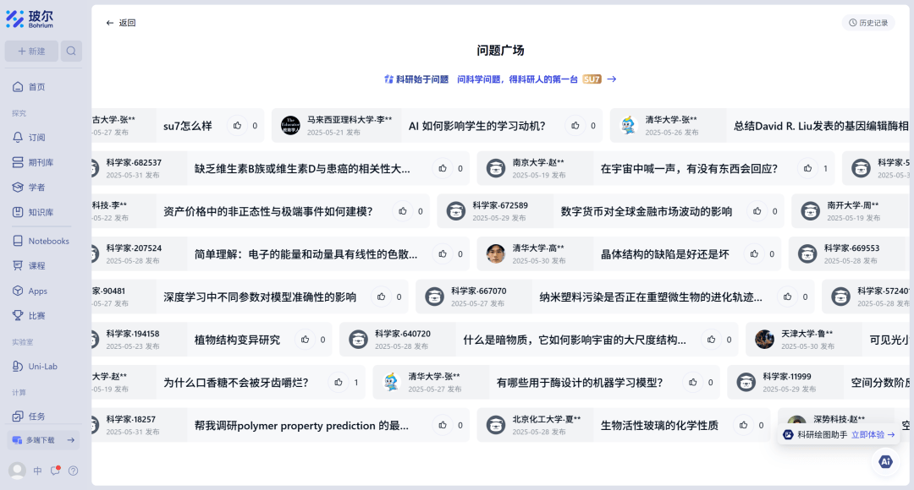
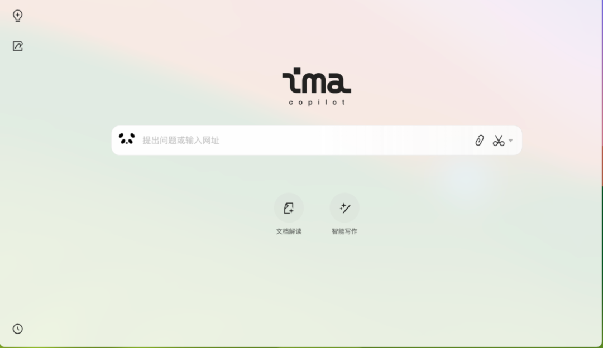

访问注意
[屏式切换]功能现已退出网站历史舞台，此后将更专注于当前主网站的发展
更新内容
网页端更新
- NEW设置方面，以"主题选择"模块取代"夜间模式"，内含通用主题（白日主题、深夜主题）与文墨志趣主题（竹林晨曦、月下黑森），选中主题对应模块可见度更高
-
网站UI大幅调整
以更清新、现代化的设计，给访问者们带来与往昔截然不同的观感
- 重构主题着色系统，修复夜间模式颜色覆盖失效问题；新增"跟随系统"功能，自动根据所选主题配色组匹配系统明暗
- 优化背景音乐信息表格样式，单元格改为独立圆角模块，行悬停带动画微浮动
- 优化网站卡片"访问网站"按钮，添加悬停下滑线动画与图标位移放大效果
- 优化“内嵌平台”的跳转按钮，小而更具动态感，不再有箱框显示问题
- 优化时段下拉框UI，每行添加彩色圆点时段指示器与当前时段高亮
- “佳节共盼”分区的节日模块调整为堆叠样式，到了节日当天则角标“节日已至”，而当节日过后则角标“节日已逾”
播客聆听
历史相关与社会近况资讯，用声音记录时间。
更新日志
查阅网站建立以来的所有迭代与进化记录。
站主博客
了解网站制作者 Silvermoon 的更多幕后故事。
首页说明
欢迎来到历史爱好者服务专设网站。这里是为历史爱好者提供文献下载、史料下载、社区进入、优质网页访问以及文件转置服务的平台。
资料下载
丰富的历史文献和史料资源，助您深入研究历史。
社区交流
与志同道合的历史爱好者交流，分享见解和发现。
专业服务
提供文件转置、翻译等专业服务，满足您的研究需求。
[背景音乐信息]
| 时段 | 音乐名称 |
|---|---|
| 上午 | 被晨光漫染的现代都市 Morning Radiance-Bathed Modern Metropolis - Silvermoon, AI Music Tool |
| 都市晨间的快节奏律动 Urban Matutinal Upbeat Groove - Silvermoon, AI Music Tool | |
| 中午 | 稍作小憩 Just a Little Rest - Silvermoon, AI Music Tool |
| 下午 | 来自午后的韵律 Rhythms from the Afternoon - Silvermoon, AI Music Tool |
| 晚间 | 于静夜中度过安逸之梦 Serene Dreams Through the Quiet Night - Silvermoon, AI Music Tool |
文件置放
访问夏腾宫网站系统服务平台的文件置放域，下载你想要下载的文件，在新的文件置放功能分区，你还能直接使用系统服务平台的其他服务
内置人工智能服务助手，助你快速调取文件了解相关信息与系统服务平台的所有信息
优质网站
提示：PC端请先单击任意卡片后再按左右方向键，移动端可直接滑动屏幕查看更多优质网站哦~

Bohrium论文网
Bohrium是国产学术论文网站，为国内科研人员提供便捷学术资源服务，在AI应用、中文资源整合及用户体验上独具特色。随着开放科学理念推广与AI技术发展，未来潜力巨大。该网站也适用于历史学习，AI搜索可关联相关学术文献
访问网站
Bohrium论文网
Bohrium作为国产学术论文网站，致力于为国内科研人员提供便捷的学术资源服务，并可能在AI技术的应用、中文资源的整合、用户体验等方面具有特色。随着开放科学理念的推广和AI技术的不断发展，Bohrium有望在未来发挥更大的作用。其也能用来学学历史，AI搜索会绑定相关学术文献。
在Bohrium上，您可以：
- 便捷获取各类学术资源
- 利用AI技术辅助搜索和筛选
- 访问丰富的中文文献资料
- 体验优化的用户界面和服务
DeepSeek Chat
DeepSeek Chat是DeepSeek官网的聊天页面，是去年春节期间闻名的国产大语言模型访问处，通过手机号登录即可使用。该平台基于先进的人工智能技术，能够理解和生成自然语言，为用户提供智能对话服务。
在DeepSeek Chat上，您可以：
- 进行自然流畅的对话交流
- 获取历史问题的解答和分析
- 进行文献摘要和内容理解
- 获得个性化的学习和研究建议
ima
腾讯智能工作台ima是一款人工智能辅助工具，便于快速、准确了解文件和网页信息，可自建知识库并设置是否公开访问。该工具结合了自然语言处理和机器学习技术，能够帮助用户高效处理和理解大量信息。
ima的主要功能包括：
- 文档内容提取和摘要
- 网页信息快速理解和总结
- 自建知识库和知识管理
- 智能问答和信息检索
iTab
iTab是一款简洁美观的浏览器起始页工具，它不仅提供了个性化的浏览器主页，还集成了多种实用功能，帮助用户提高浏览效率。
iTab的主要特点：
- 简洁美观的界面设计
- 自定义主题和背景
- 快速访问常用网站
- 集成天气、日历等实用功能
- 支持待办事项和笔记功能
书格
书格是一个完全开放的数字图书馆，致力于传播中国传统文化典籍和开放获取的古籍善本。该平台提供高清扫描的古籍文献，涵盖经、史、子、集等多个类别，是历史研究的重要资源。
在书格上，您可以：
- 浏览和下载各类古籍文献
- 搜索特定主题的历史资料
- 参与古籍整理和校对工作
- 了解中国传统文化和历史
Wahlplakate in der Weimarer Republik
Wahlplakate in der Weimarer Republik是一个关于魏玛共和国的历史研究网站，由德国人制作，内容全为德文，需一定翻译门槛（或直接用AI辅助理解）。该网站主要展示了魏玛共和国时期的选举海报和政治宣传材料，为研究魏玛时期的政治和社会提供了丰富的视觉资料。
网站内容包括：
- 魏玛共和国时期的选举海报高清图片
- 各政党的政治宣传材料和口号
- 选举历史和政治背景介绍
- 专家分析和研究文章
相关社区
社区介绍
社区特色
- 专业的历史讨论氛围，避免无关话题干扰
- 定期举办历史主题讲座和线上研讨会
- 丰富的历史资料共享和交流
- 友好的历史爱好者社区，共同进步
社区规则
- 尊重历史事实，避免传播未经证实的信息
- 保持友好和尊重，避免人身攻击和争吵
- 讨论内容需与历史相关，避免无关话题
- 禁止发布广告、垃圾信息和恶意链接
- 保护个人隐私，不随意泄露他人信息
- 鼓励分享原创研究和见解，注明资料来源
佳节共盼
端午节
农历五月初五
七夕节
农历七月初七
中元节
农历七月十五
中秋节
农历八月十五
← → 键切换